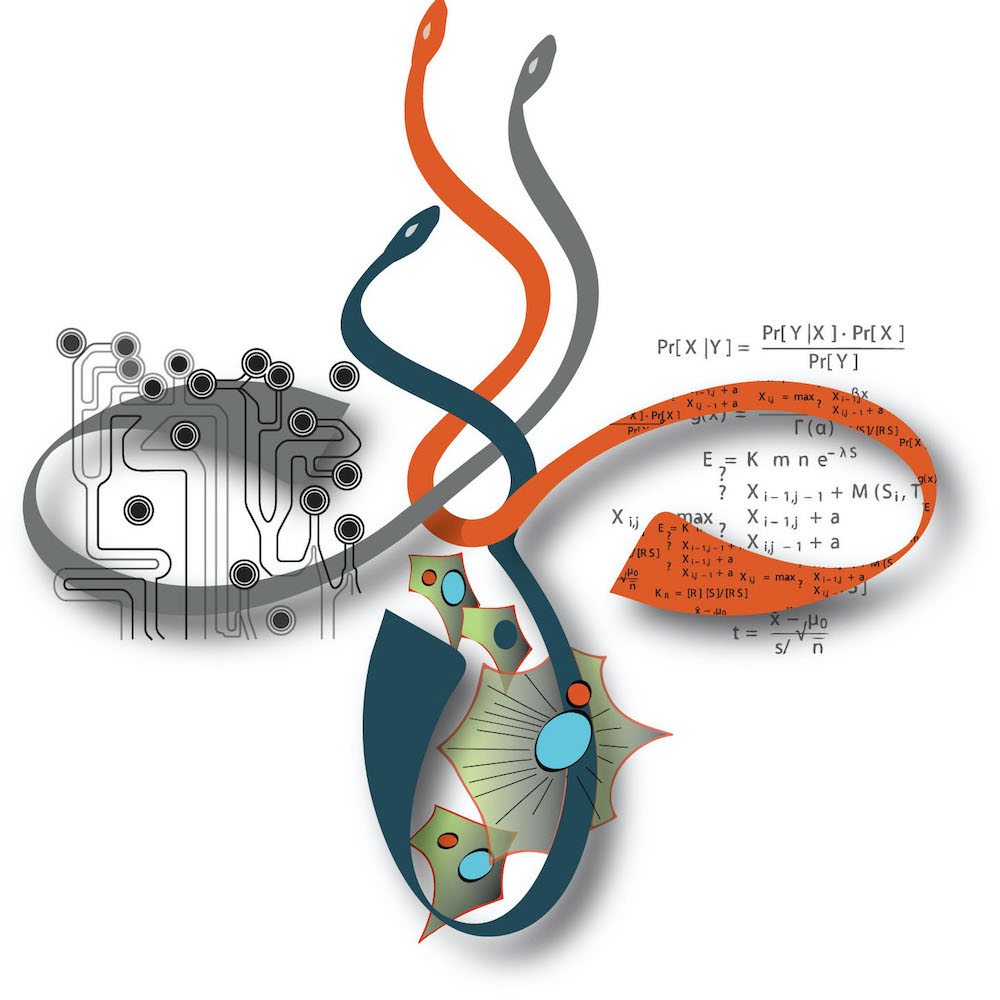
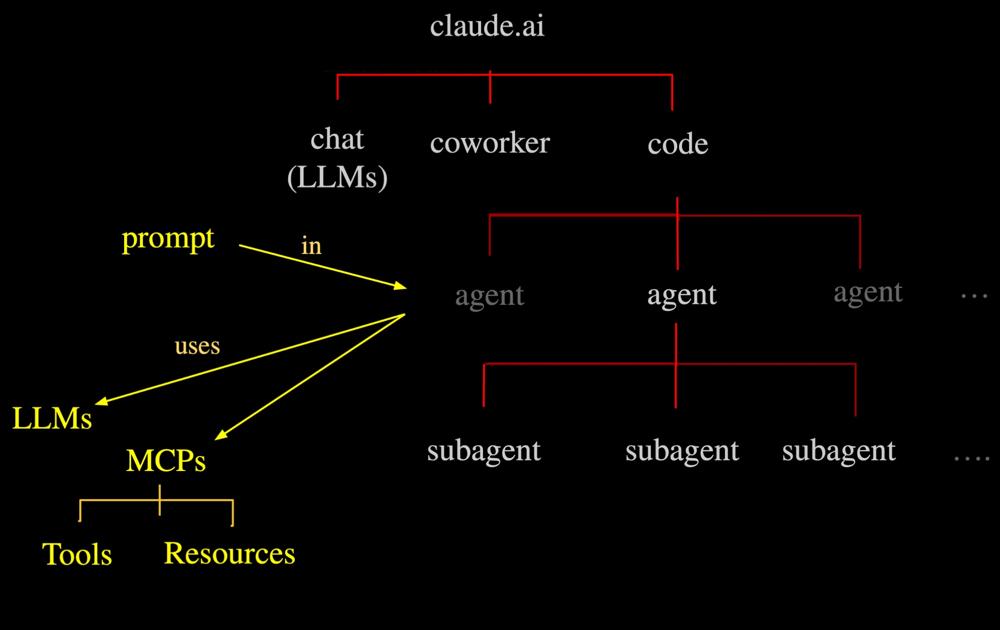
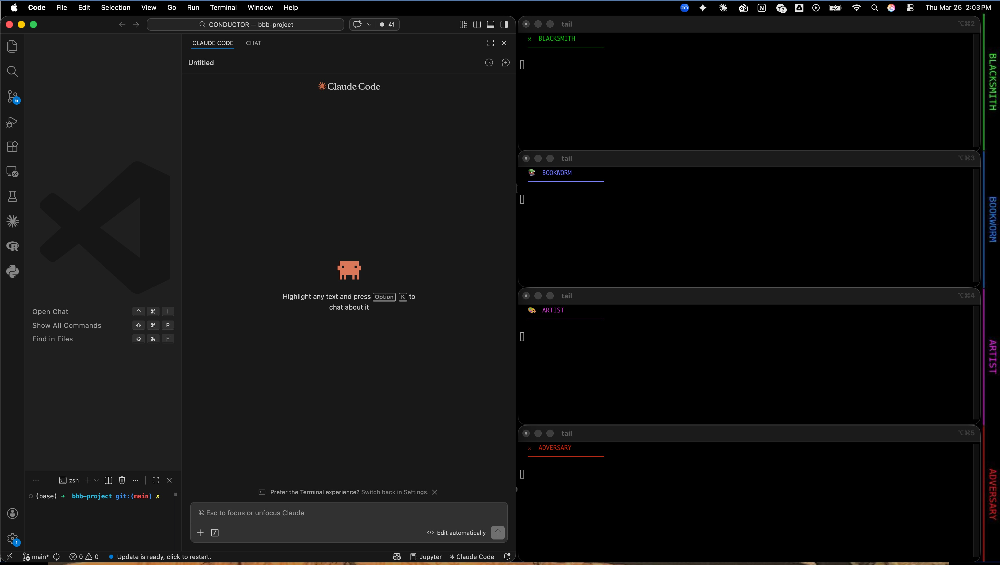
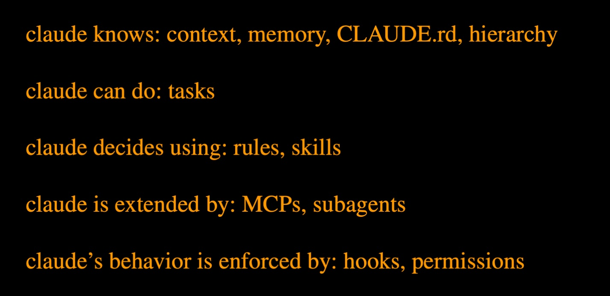
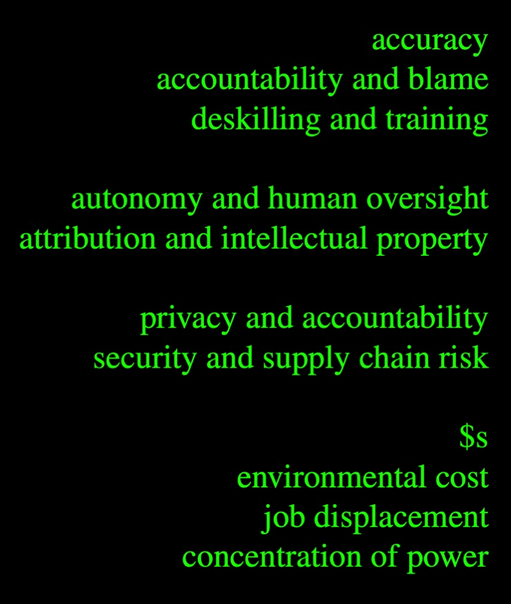
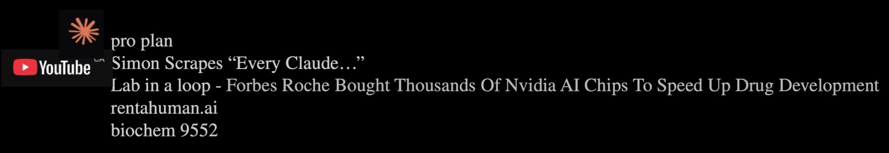

A live demonstration of Agentic AI in biochemistry using Claude Code
Mike Hallett
Department of Biochemistry · Schulich School of Medicine & Dentistry
Western University

Pin1 is a peptidyl-prolyl isomerase that acts as a molecular switch — it changes the shape of proteins after they are phosphorylated. In the brain, Pin1 regulates tau (whose tangles are a hallmark of Alzheimer's) and APP processing (which produces amyloid plaques). Unusually, Pin1 activators — not inhibitors — may be neuroprotective. This is the opposite of cancer, where Pin1 is oncogenic and you want to shut it down.
The BBB is the brain's gatekeeper: a tight layer of cells lining blood vessels that decides which molecules get in. A drug that cannot cross it will never reach a brain target. A drug that crosses unexpectedly can cause dangerous side effects. Predicting whether a molecule is BBB+ (permeable) or BBB− (blocked) from its chemical structure alone is a high-value problem in drug discovery.
Can we use AI to sift through thousands of molecules, predict which ones cross the BBB, and then ask: do any of them look like they could bind Pin1? If so, we may have found candidate molecules for a completely new approach to treating Alzheimer's disease — all discovered computationally, in under an hour, by an autonomous AI system.
A large curated collection of ~7,800 molecules with experimentally measured BBB permeability. Each molecule is labelled BBB+ or BBB− and encoded as a SMILES string — a text representation of its chemical structure.
Shaker et al. built a machine learning classifier to predict BBB permeability from molecular descriptors (molecular weight, LogP, TPSA, etc.). We will evaluate their classifier on the B3DB data and, if it proves sound, use its predictions as the foundation for our Pin1 screening.
RDKit for molecular descriptors
XGBoost for classification
Streamlit for interactive exploration
fpocket for pocket detection
ChEMBL for known ligands

The one who does the heavy lifting. Loads data, computes molecular properties, trains classifiers, screens for Pin1 candidates, and builds the interactive dashboard you can click through. Think of it as your computational lab bench.
The one who reads everything. Searches the literature, looks up molecules in public databases (PubChem, ChEMBL, ClinicalTrials.gov), and writes up what the scientific community already knows. Your always-on research librarian.
The one who shows you what it looks like. Creates every figure, chart, and visualization — from simple bar plots to 3D protein structures. Assembles everything into a polished PowerPoint at the end.
The one who tries to prove us wrong. Checks for data leakage, demands cross-validation, questions whether our evidence is strong enough, and flags risks. The scientific peer reviewer that never sleeps.

All four agents work at the same time. While the blacksmith crunches numbers, the bookworm reads papers. Nothing waits in line.
Each agent has one job and does it well. Custom tools, personality, and instructions tuned to its role — like hiring four experts instead of one generalist.
The adversary's only job is to find problems. Having a dedicated critic means mistakes surface early, not after the presentation.
You tell each agent what to do in plain English. No code, no config files, no command-line flags — just describe the task.
Every agent logs its work. The prompts are saved, the outputs are versioned, and anyone can re-run the same analysis from the same starting point.
A biochemist who has never opened a terminal can drive the whole pipeline. The AI handles the programming — you bring the scientific questions.
You ask Claude to do the work directly. It reasons through each molecule inside the conversation, returns a table, and you move on.
Pros: Fast for small jobs. No programming knowledge needed. Immediate answer.
Cons: Results vanish when the conversation ends. Hard to audit — you can't see the method, only the output. Doesn't scale: 10,000 molecules would exhaust the context window. Not reproducible by someone else.
You ask Claude to write the code that does the work. It produces a script you can run, inspect, modify, and share.
Pros: Scales to any size — 10,000 or 10 million molecules. Reproducible: anyone can re-run it. Persists after the conversation. You learn from the code itself. And critically: the code is a witness — a certificate of correctness you can inspect. Every assumption, every threshold, every decision is visible in the logic. You don't have to trust the answer; you can verify it.
Cons: Takes longer to set up. Requires a working environment (Python, libraries). May need debugging.
When the task is small and one-off, asking for a direct answer is fine.
When the task is large, repeated, or matters scientifically, ask Claude to write code. The code is both the product and the proof — transparent, scalable, and yours to keep.
This is what we do in the demo: the blacksmith writes real Python, not mental math.
Round 1 — Explore & Build
Load the B3DB dataset, compute molecular descriptors with RDKit, and build a Streamlit GUI so we can explore every molecule, its properties, and its BBB label interactively.
Summarise the Shaker et al. paper and survey what is known about BBB permeability prediction. Write a dedicated section on Pin1's role in Alzheimer's — tau, APP, and the unusual case for activators.
Visualise basic dataset statistics: number of molecules, BBB+ vs BBB− class balance, feature distributions. First look at the data through pictures.
Critique Shaker et al.'s methodology. Flag weaknesses, suggest improvements, and check whether any BBB+ molecules already resemble known Pin1 ligands — seeding the hypothesis for Round 2.
Round 2 — Screen & Validate
Screen all ~7,800 molecules for structural similarity to known Pin1 ligands (Tanimoto). Run pharmacophore-based screening of all BBB+ molecules against Pin1's binding pockets (identified by fpocket on the AlphaFold structure).
Query ChEMBL for known Pin1 inhibitors/activators. Search ClinicalTrials.gov for CNS trials. Look up key Pin1–Alzheimer's papers (Lu 2003, Pastorino 2006). Check if any known activators are BBB+.
Render the AlphaFold structure of Pin1 coloured by confidence. Highlight the WW domain and PPIase domain. If we have candidate binders, show their pharmacophore overlay on the binding pocket.
Is the structural evidence for Pin1 binding convincing or speculative? Is the AlphaFold confidence high enough to trust? Flag the cancer tension: a Pin1 activator that protects neurons might promote tumour growth elsewhere.
Round 3 — Synthesise & Present
Compile all findings into a polished PowerPoint: most promising BBB+ molecules, their evidence, known interactions, clinical trial status, and a dedicated section on the Pin1 hypothesis as a therapeutic opportunity in Alzheimer's.
Write an exam that tests the audience's understanding of everything we covered — the biology, the computational methods, the AI orchestration, and the ethical considerations.

| Naive Approach | Mature Approach | |
|---|---|---|
| Prompting | One enormous prompt expecting a perfect end-to-end system on the first try | Iterative rounds — start broad, inspect results, refine. Let the system show you what it finds before asking for more |
| Oversight | A single agent marks its own homework — no one checks for errors | A dedicated adversary audits every step: data leakage, cross-validation, questionable assumptions |
| Trust | Accepting Claude's output as ground truth without verification | Drilling down, challenging claims, cross-referencing with primary sources. "Show me the evidence" |
| Learning | Copy-pasting results into a report without understanding them | Using the system as a teacher — asking why, building your own mental model, expanding your knowledge |
| Architecture | One generalist agent doing everything sequentially | Specialised agents working in parallel — each with the right tools, personality, and constraints for its role |
| Failure Mode | Giving up when the first attempt doesn't work — "AI can't do this" | Treating failures as diagnostic: why did it fail? What context was missing? Adjusting the prompt and trying again |
| Scope | Asking the AI to replace your expertise entirely | Treating it as a force multiplier — you bring the scientific questions, it brings the compute and breadth |


michael.hallett@uwo.ca